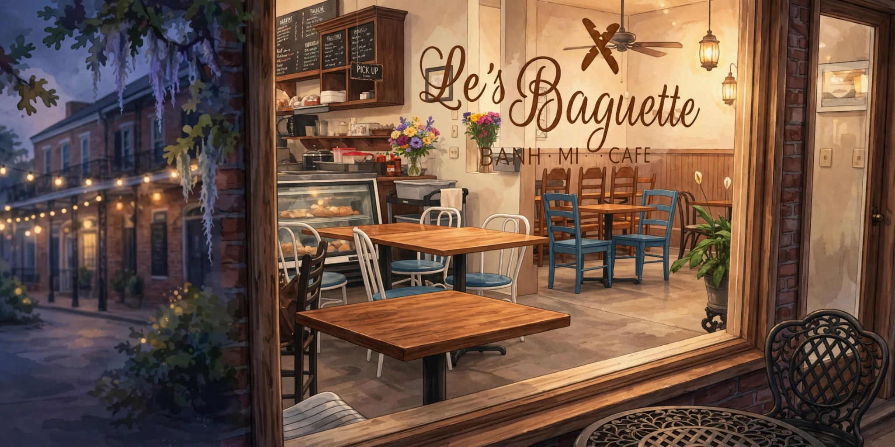

Bánh mì
Crisp baguettes filled with savory proteins, fresh herbs and bright pickled vegetables.
Explore sandwiches
On Dryades Street in Uptown New Orleans, Le’s Baguette offers the kind of menu you can return to again and again: freshly prepared bánh mì, phở, vermicelli bowls, steamed bao buns, and more.
Come by for a quick lunch, a relaxed meal, or something good to take home. The food is the reason to visit; the neighborhood atmosphere makes you want to linger.
A few of the Vietnamese café staples people come looking for in New Orleans.
Crisp baguettes filled with savory proteins, fresh herbs and bright pickled vegetables.
Explore sandwichesWarm Vietnamese noodle soup for a comforting lunch or dinner.
Explore phởVermicelli, steamed bao, spring rolls, and flavorful rice plates.
Explore the menu4607 Dryades Street, New Orleans, LA 70115